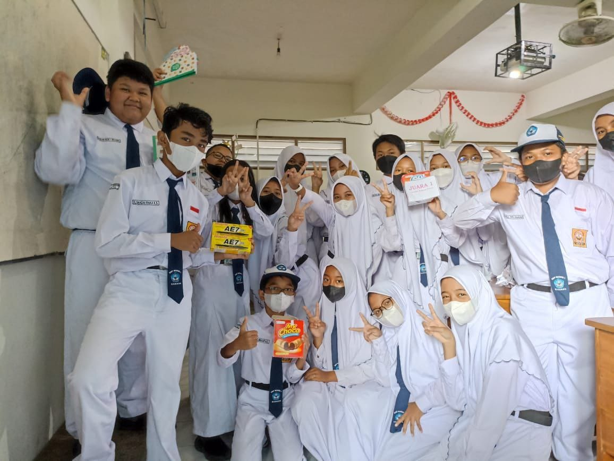
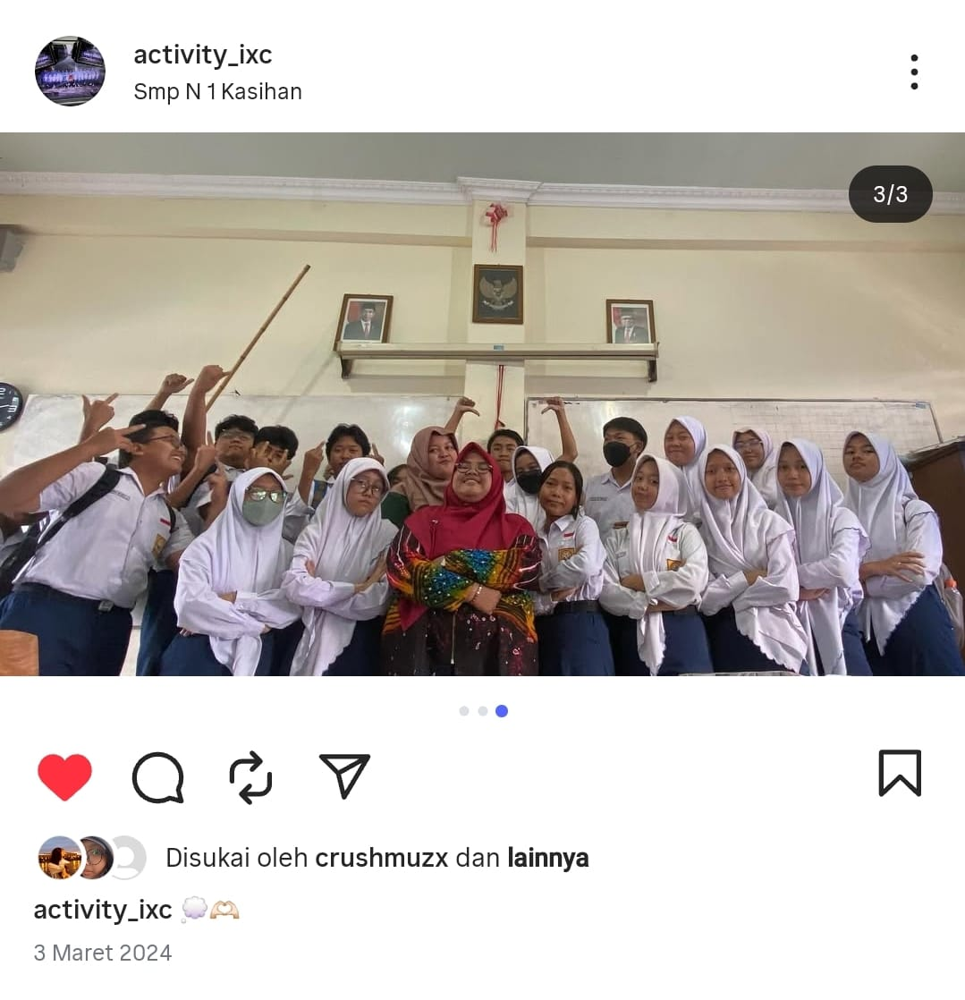
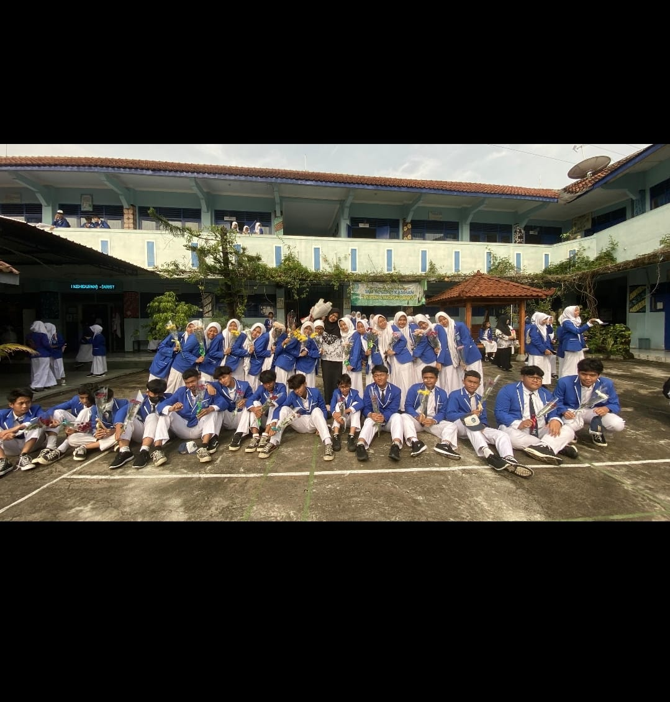
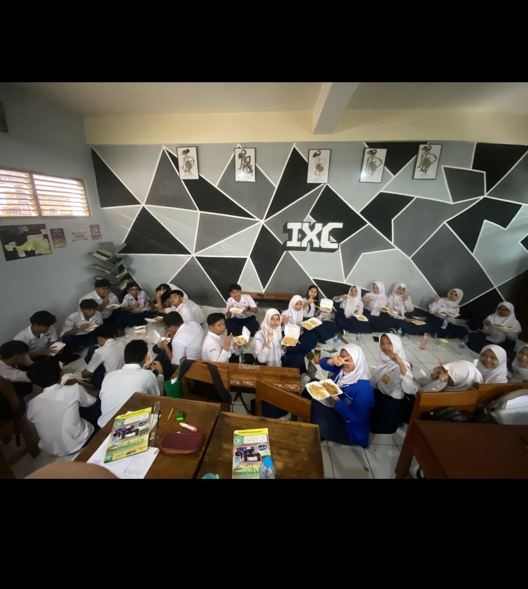

౨ৎ Masa Sekolah Menengah Pertamaku 🎧ྀི
. ܁₊ ⊹ . ܁ ⟡ ܁ . ⊹ ₊ ܁.
Masa sekolah menengah pertamaku dipenuhi dengan tawa, obrolan kecil di antara jam pelajaran, dan petualangan sederhana bersama teman-temanku. Aku masih ingat suara canda tawa kami, rasa gugup sekaligus semangat menjelang ujian, serta kebahagiaan sederhana saat tumbuh bersama. Momen-momen itu begitu murni dan tak terlupakan — masa yang akan selalu aku simpan di dalam hatiku.
|  | ✩♬ ₊˚.🎧⋆☾⋆⁺₊✧
Foto ini adalah awal dari segalanya. Kelas tujuh — masa di mana senyum pertama, tawa kecil,
dan momen canggung mulai menghiasi hari-hari kami. Saat itu, kami hanyalah sekelompok anak
dengan latar belakang dan kepribadian yang berbeda, namun perlahan mulai saling mengenal,
saling memahami, dan tumbuh menjadi teman yang akrab. Tiga puluh anak dengan cerita
masing-masing, yang setiap harinya semakin dekat lewat percakapan ringan, candaan kecil,
hingga rahasia yang dibisikkan di sela-sela waktu belajar. Kami mungkin tidak sadar saat
itu, tapi justru di situlah kenangan paling manis tercipta — kenangan tentang kebersamaan
yang tulus dan kebahagiaan sederhana yang kini begitu berarti. Seiring berjalannya waktu,
kami belajar menghadapi hari-hari sekolah bersama, dari ruang kelas yang penuh canda,
suara tawa yang menggema di lorong, hingga makan siang bersama yang selalu penuh cerita.
Ada kalanya kami merasa lelah karena tugas dan ujian, namun kehadiran teman-teman membuat
semuanya terasa ringan dan menyenangkan. Kami tumbuh bersama, belajar bukan hanya dari
buku, tapi juga dari kebersamaan, tawa, dan pengalaman yang kami bagi. Setiap momen kecil
yang dulu terasa biasa kini menjadi kenangan yang begitu hangat dan berharga — potongan
waktu yang akan selalu aku simpan dalam hati, sebagai bagian dari masa remajaku yang paling
indah dan tak tergantikan. |
|  | 𓆉 ⋆｡˚𓇼 ⋆｡˚𓆟
Foto ini diambil saat kami sudah duduk di kelas delapan — masa di mana segalanya mulai terasa semakin istimewa. Saat itu, kami sudah saling mengenal dengan baik, tumbuh menjadi kelompok yang lebih akrab, lebih kompak, dan selalu dipenuhi dengan tawa. Kami sering berbagi cerita tentang apa saja, menghabiskan waktu istirahat bersama, dan saling mendukung melewati hari-hari sekolah yang kadang melelahkan tapi penuh makna. Setiap sudut ruang kelas menjadi saksi kenangan kami — dari candaan kecil, proyek kelompok yang lucu, hingga obrolan panjang setelah jam pelajaran selesai. Kami membuat kejutan-kejutan kecil, merayakan momen bersama, dan tertawa tanpa henti saat study tour yang penuh keseruan. Setiap harinya terasa hangat dan hidup, seolah kami sedang menjalani dunia kecil milik kami sendiri — dunia yang penuh warna, kebersamaan, dan rasa nyaman yang sulit dijelaskan. Kelas delapan menjadi salah satu masa terindah dalam hidupku, masa di mana persahabatan tumbuh begitu tulus, kebahagiaan terasa begitu sederhana, dan setiap tawa meninggalkan jejak hangat yang sampai sekarang masih melekat di hati. |
|  | ୭🧷✧˚. ᵎᵎ 🎀
Foto ini diambil saat Hari Guru — hari yang penuh dengan senyum, tawa, dan kenangan indah. Waktu itu kami sudah berada di kelas sembilan, hanya selangkah lagi menuju kelulusan. Dalam foto ini, kami terlihat begitu akrab, saling berpelukan, tertawa bersama, dan berusaha menikmati setiap detik kebersamaan yang perlahan mulai terasa akan berakhir. Ada sesuatu yang istimewa dari hari itu — mungkin karena kami mulai menyadari bahwa waktu berjalan begitu cepat, atau karena kami mulai merasakan bahwa perjalanan kami bersama hampir sampai di penghujungnya. Hari-hari di kelas sembilan terasa berbeda. Semua orang sibuk mempersiapkan ujian, tugas, dan berbagai hal yang akan membawa kami menuju kelulusan. Kami memang tidak lagi menghabiskan waktu sebanyak dulu, dan terkadang rasanya seolah dunia sedang terburu-buru membuat kami tumbuh dewasa. Namun, di tengah tekanan dan kesibukan belajar tanpa henti, masih ada momen-momen kecil yang membuat segalanya terasa berharga — tawa di sela jam istirahat, foto-foto lucu yang diambil tanpa rencana, dan kehangatan sederhana saat berada di antara teman-teman. Kini, ketika aku melihat kembali foto itu, aku menyadari betapa berharganya masa-masa itu — tawa, persahabatan, perjuangan bersama, dan rasa saling mengerti tanpa banyak kata. Waktu memang berlalu begitu cepat, tetapi kenangan itu tetap tinggal, menempel erat di hati. Meskipun sekarang kami telah menempuh jalan masing-masing, sebagian dari diriku akan selalu tertinggal di ruang kelas itu — bersama orang-orang yang pernah berbagi tawa dan cerita, pada Hari Guru yang begitu indah dan penuh makna. |
 |
✩°｡🧸𓏲⋆.🧺𖦹 ₊˚
It was the morning before ASPD — the kind of morning that felt both ordinary and Momen itu terasa begitu ajaib. Langit lembut, udara tenang, dan tawa kami bergema seperti melodi pelan yang tak ingin kami akhiri. Waktu itu kami masih di kelas sembilan, berdiri berdampingan, sambil berbisik doa-doa kecil, memohon ketenangan pikiran dan hati yang mantap. Tidak ada yang mengatakannya dengan lantang, tapi di dalam hati kami, kami tahu bahwa momen ini tidak akan bertahan selamanya. Tak lama lagi, ruang kelas yang dulu terasa seperti rumah akan sunyi, dan masing-masing dari kami akan menapaki jalan hidup yang berbeda.Namun, di detik singkat itu, segalanya terasa utuh — persahabatan kami, impian kami, masa muda kami. Melihat foto ini sekarang terasa seperti membuka jendela ke masa lalu — di mana waktu bergerak lebih lambat, senyum begitu mudah tercipta, dan perpisahan belum menemukan jalannya kepada kami. Setiap detil dalam foto ini membawa kembali kehangatan dan kebahagiaan yang begitu murni, seolah dunia berhenti sejenak untuk memberi kami ruang menikmati kebersamaan yang tulus. |
|  | 𐙚⋆°🦢｡⋆♡
Foto ini diambil hanya beberapa hari sebelum ASPD — sebelum kesibukan, sebelum perpisahan, sebelum kami semua belajar untuk melepas. Saat itu kami masih di kelas sembilan, berdiri dalam hangatnya persahabatan yang terasa tak berujung. Hari itu, ketua kelas kami, Audia, membelikan kami Gacoan — hal kecil, namun membuat segalanya terasa istimewa. Kami tertawa hingga ruangan dipenuhi sukacita, berbagi pemikiran-pemikiran sederhana, dan akhirnya mengakhiri hari dengan percakapan mendalam sebagai satu kelas — kata-kata mengalir, hati terbuka, dan waktu seolah berhenti cukup lama agar kami benar-benar merasakan koneksi satu sama lain. Momen itu sederhana, tapi begitu indah. Sekarang, ketika aku melihat foto ini, rasanya seperti memegang secercah sinar matahari — lembut, singkat, namun selamanya hangat. Mungkin inilah arti dari tumbuh dewasa — belajar bahwa bahkan hari-hari terkecil pun dapat menyimpan potongan terbesar dari hati kita. Foto ini mengingatkanku bahwa kebahagiaan tidak selalu datang dari hal besar, melainkan dari momen-momen sederhana yang membekas selamanya. |
{kind=link}
{kind=link}
{kind=link}
{kind=link}